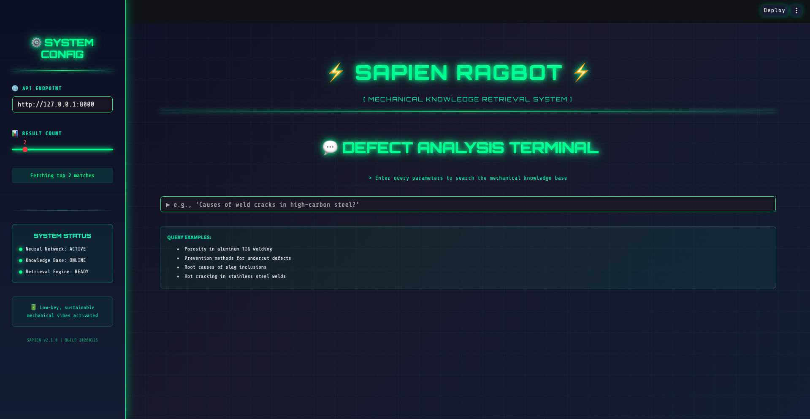
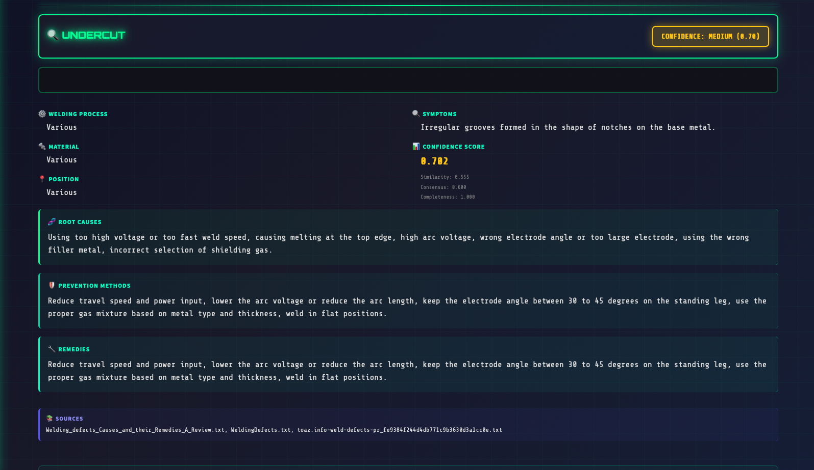

⚡ SAPIEN RAGBot
Sustainable • Dystopian • Mechanical Knowledge Retrieval
Status: Active Development
An industrial-grade RAG (Retrieval-Augmented Generation) system for welding defect diagnosis, powered by semantic search and confidence scoring. Built for mechanical engineers who need reliable, traceable answers about welding failures, root causes, and remediation strategies.
SAPIEN RAGBot combines FAISS-powered vector similarity search with multi-dimensional confidence metrics to deliver precise defect matching with structured metadata including symptoms, causes, prevention methods, and remedies.
🌟 Key Features
🔍 Semantic Search
FAISS-powered vector similarity for precise defect matching
🧠 Confidence Scoring
Multi-dimensional confidence metrics
📊 Rich Metadata
Structured defect data with full traceability
🎨 Dystopian UI
Futuristic Streamlit interface with neon aesthetics
⚡ Fast API
Production-ready FastAPI backend
🔧 Mistral AI
Powered by Mistral embeddings
🏗️ System Architecture
┌─────────────────────────────────────────────────────────────┐
│ SAPIEN RAGBot System │
└─────────────────────────────────────────────────────────────┘
│
┌───────────────────┼───────────────────┐
│ │ │
┌─────▼─────┐ ┌──────▼──────┐ ┌─────▼─────┐
│ Frontend │ │ Backend │ │ Knowledge │
│ Streamlit │◄────►│ FastAPI │◄───►│ Base │
└───────────┘ └─────────────┘ └───────────┘
│ │ │
• Dystopian UI • Vector Search • FAISS Index
• Query Input • Confidence • Embeddings
• Results Display • REST API • Metadata
📊 Data Pipeline
PDFs → Text Extraction → Structured Chunking → Embeddings → FAISS Index
↓
Mistral AI
↓
Defect Name, Symptoms,
Causes, Prevention, etc.
Pipeline Stages:
- Stage 1: Extract text from PDF welding manuals using pdfplumber
- Stage 2: Extract structured defect data using Mistral AI
- Stage 3: Generate AI-powered summaries for each defect
- Stage 4: Create embeddings with Mistral embeddings model
- Stage 5: Build FAISS vector index for fast similarity search
🔧 Technology Stack
🧠 Confidence Scoring System
The system uses a multi-dimensional confidence model to ensure reliable defect diagnosis:
1. Similarity Confidence (40%)
Measures vector similarity using exponential decay of L2 distances:
2. Consensus Confidence (30%)
Measures agreement across retrieved documents:
3. Completeness Confidence (30%)
Checks field completeness (6 required fields):
Final Score Calculation
Confidence Levels
📡 API Example
Request
Response
🎨 User Interface
Experience the dystopian, futuristic interface of SAPIEN RAGBot with neon aesthetics and real-time animations.
 💡 Use Cases
1. Quality Control
Quickly diagnose welding defects during inspection and identify root causes.
2. Training
Educate new welders about common defects, their causes, and prevention methods.
3. Maintenance Planning
Aggregate historical failure data to predict and prevent future issues.
4. Documentation
Centralize welding knowledge from multiple manuals into a searchable system.
🚧 Roadmap
- ✓ Multi-modal support (images, diagrams)
- ✓ Real-time re-ranking with cross-encoders
- ✓ User feedback loop for continuous improvement
- ⚡ Export reports to PDF
- ⚡ Multi-language support
- ⚡ Integration with PLM/ERP systems
- ⚡ Mobile app version
⚡ Built with precision for sustainable mechanical excellence ⚡
Low-key, dystopian, futuristic vibes activated 🔋